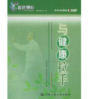

百家讲坛全集
>
百家讲坛2001~2003
>
百家讲坛 与健康手拉手

名称：
集数：
播出时间：
百家讲坛 与健康手拉手
10
2003年09月11日
分集介绍
《百家讲坛》 与健康手拉手 （一） 与健康手拉手
播出时间：
主讲人：
介绍：
2003年09月11日
洪昭光
《百家讲坛》 与健康手拉手 （二） 生活方式与癌
播出时间：
主讲人：
介绍：
2002年01月25日
杨秉辉
《百家讲坛》 与健康手拉手 （三） 疾病诊断的金标准
播出时间：
主讲人：
介绍：
2002年06月06日
朱世能
《百家讲坛》 与健康手拉手 （四） 心理因素与疾病
播出时间：
主讲人：
介绍：
2002年09月05日
杨凤池
《百家讲坛》 与健康手拉手 （五） 现代人健康生活透视
播出时间：
主讲人：
介绍：
2002年10月25日
吉良辰、黄美涓、蔡同一、于小冬
《百家讲坛》 与健康手拉手 （六） 绿色食品与青少年健康成长
播出时间：
主讲人：
介绍：
2002年11月28日
季成叶
《百家讲坛》 与健康手拉手 （七） 绿色产品与人类健康
播出时间：
主讲人：
介绍：
2002年09月10日
孟凡乔
《百家讲坛》 与健康手拉手 （八） 如何延缓衰老
播出时间：
主讲人：
介绍：
2002年08月20日
黄美涓
《百家讲坛》 与健康手拉手 （九） 关注老年人心智健康
播出时间：
主讲人：
介绍：
2002年10月21日
许贤豪
《百家讲坛》 与健康手拉手 （十） 血压与健康
播出时间：
主讲人：
介绍：
2003年10月09日
黄从新